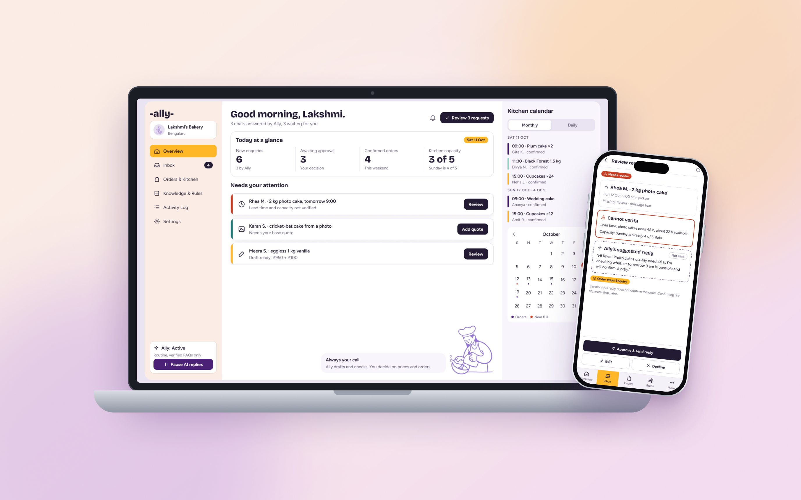
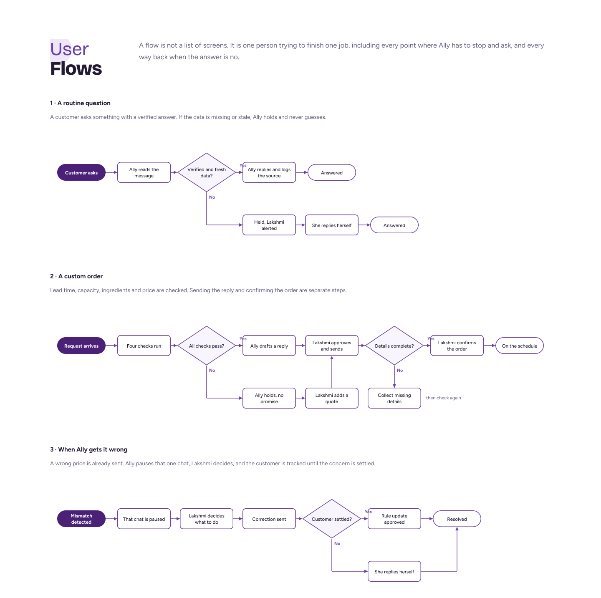
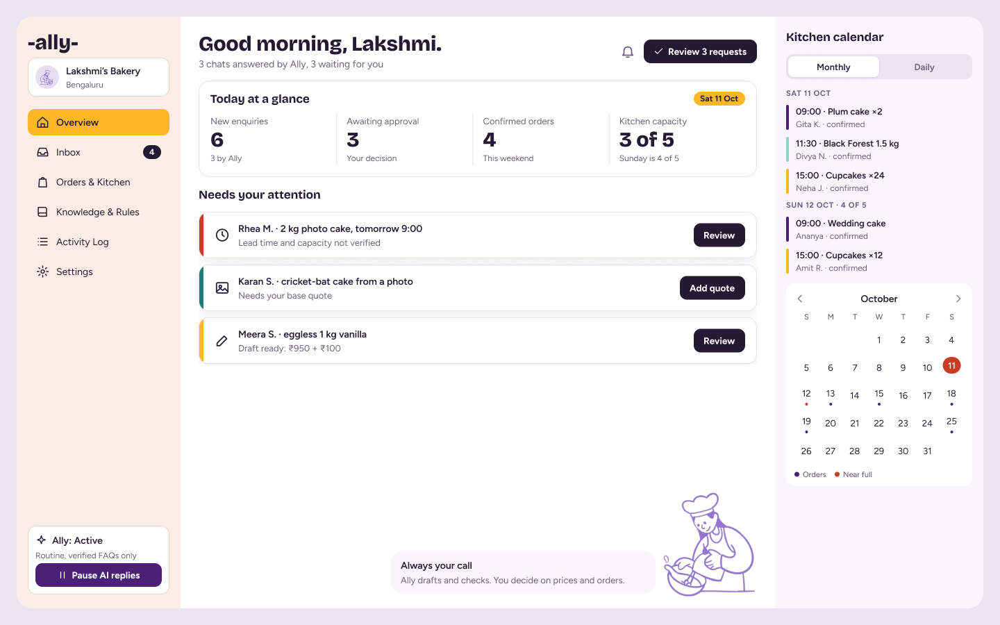
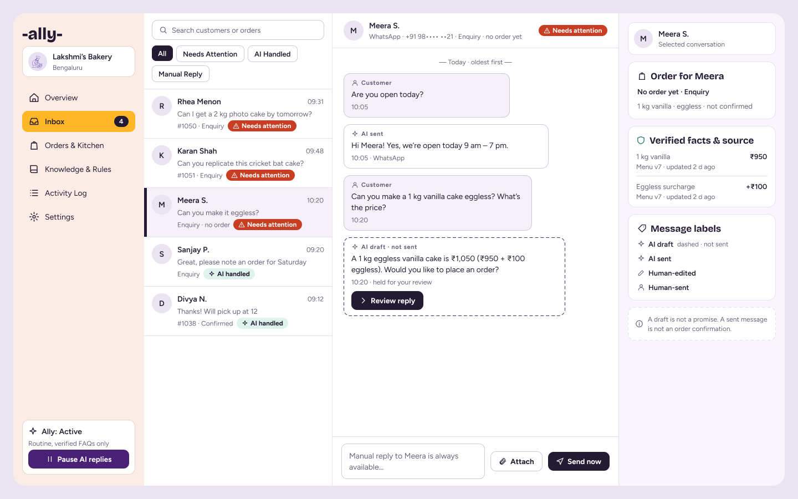
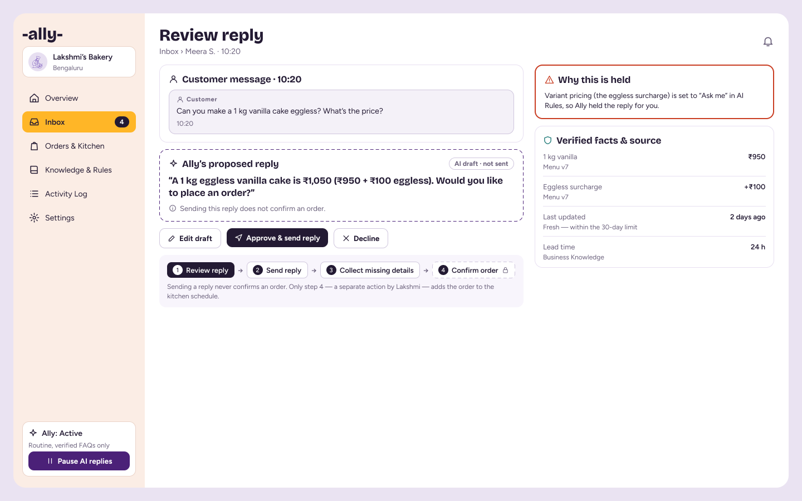
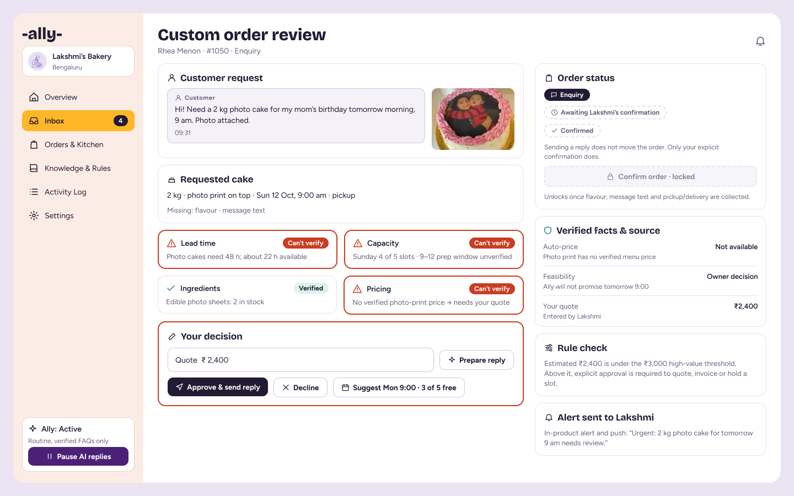
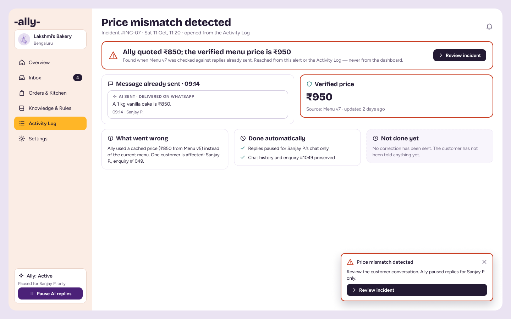
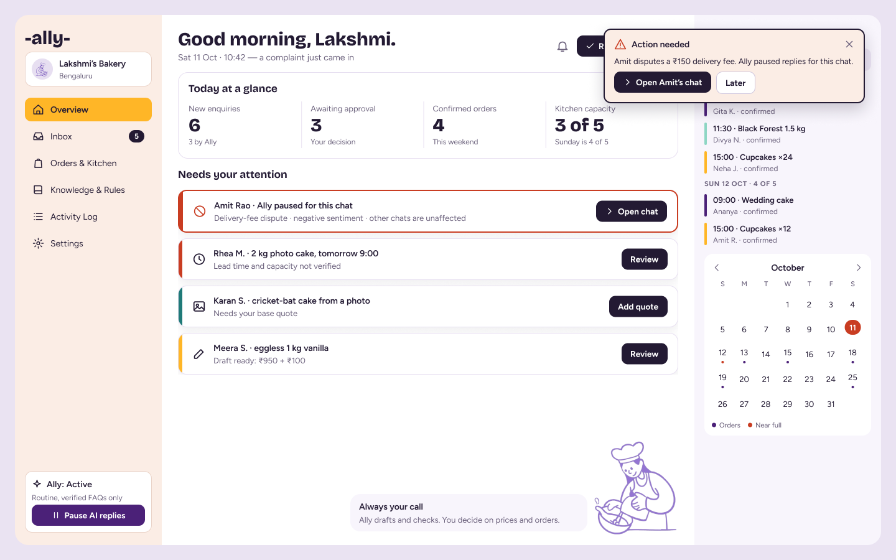
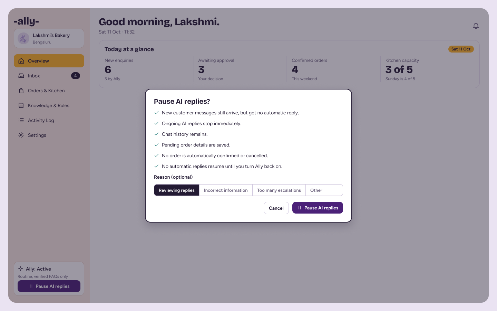

Ally · AI copilot for a home bakery
Ally, an AI copilot for a home bakery that sells entirely through WhatsApp
PRODUCT DESIGN · AI UX
DESIGN TASK
48 HRS
27 FRAMES
View the Figma file

Go back
01
OVERVIEW
02
CONTEXT
03
PROBLEM
04
KEY DECISION
05
FINAL DESIGN
Architecture and flows
Main flow
Error recovery
Keeping control
06
OUTCOME
01 / 06
OVERVIEW
Task
Ally is an AI copilot for Lakshmi, who runs a home bakery from her kitchen in Bengaluru and sells entirely through WhatsApp.
Overview
It answers the questions that have a verified answer, opening hours and standard menu prices, and stops at everything that would commit her to a price, a date or an order. Those come to her as a draft with the facts attached. Rather than another inbox, Ally sits on top of the WhatsApp conversation she already has with her customers, and treats “a commitment” as a thing that only she can make.
My role
Product designer, solo. A 48-hour design task.
Tools used
Figma
Claude
GPT
What was built
6
Core screens
27
Frames incl. states
2
Edge case flows
02 / 06
CONTEXT
What does a small business owner actually refuse to let software decide?
One question had to be answered before anything was designed. Desk research gave the pattern; the conversation gave the texture.
METHODS
SECONDARY RESEARCH
How small sellers work on WhatsApp
How orders, prices and complaints are handled when the shopfront is a chat thread and the records are a notebook.
SECONDARY RESEARCH
Existing AI assistants
How Intercom Fin, Gorgias and Shopify Inbox handle handoff, approval and tone, and where they stop short.
SECONDARY RESEARCH
Dashboard patterns
How owner dashboards usually express attention, status and approval.
PRIMARY RESEARCH
Two home food businesses
My cousin, who runs a home bakery, and a woman from my campus who started a Maharashtrian food business. Both take orders on WhatsApp and phone calls.
INSIGHTS FROM THESE CONVERSATIONS
01
Missed orders
Enquiries get overlooked when the person managing WhatsApp is busy, or is not the one who runs the business.
02
Flexible delivery fees
Regular customers, friends and family may receive delivery fee waivers.
03
Orders during food preparation
Owners manage customer messages alongside kitchen work.
04
Different business needs
Each business has its own products, pricing and order practices.
03 / 06
PROBLEM
The problem
we try to solve
Lakshmi has to answer customers while her hands are in dough, but she cannot let a machine promise a price, a date or an order in her name. Today she either replies late and loses the sale, or replies fast and carries the risk of a commitment she cannot keep.
HOW MIGHT WE
“How might we let Lakshmi delegate routine customer conversations to AI without losing control of business commitments or customer trust?”
04 / 06
KEY DECISION
Sending a reply is not the same as confirming an order.
During wireframe iteration, I found that approving a customer reply could make an order appear confirmed before the details were finalised. I separated the actions into distinct steps: review the reply, send it, collect missing information, and confirm the order. Only confirmed orders appear in the kitchen schedule.
DESIGN PRINCIPLES
01
Automate only the routine
Ally answers opening hours and standard menu prices, and only when the data behind the answer is verified and fresh.
02
Consequences need a human
Anything priced, promised, confirmed or invoiced stops and waits for Lakshmi.
03
Show the facts, not a score
Every draft carries the figure it used, where it came from and how old it is. No confidence percentages.
04
Mistakes must be recoverable
When something wrong is already sent, the product helps correct it and tracks whether the customer is actually satisfied.
05
Pausing is real control
Automation can be stopped per chat or everywhere, and nothing resumes until she says so.
Ally handles routine work. Lakshmi controls business commitments.
05 / 06
FINAL DESIGN
INFORMATION ARCHITECTURE
One product, two surfaces
Lakshmi’s dashboard, and the WhatsApp conversation her customers already use. The same five-to-six item navigation serves desktop and mobile; on a phone the side panel becomes a bottom bar.

USER FLOWS
A routine question, a custom order, and when Ally gets it wrong
A flow is not a list of screens. It is one person trying to finish one job, including every point where Ally has to stop and ask, and every way back when the answer is no.

MAIN FLOW
Two surfaces, one rule
The customer never leaves WhatsApp. Lakshmi gets a responsive web dashboard. Ally sits between them and is only allowed to speak on its own when the data behind the answer is verified.

Home
Ally’s status, four numbers, and only the things that need her today.

Unified inbox
One selected customer, chronological history, every message labelled by author.

AI reply review
The draft, the facts behind it, and the step strip that separates sending from confirming.

Custom order review
Lead time, capacity, ingredients and pricing each pass or fail on their own.

Order confirmed
Still at Enquiry until she confirms.

Orders & kitchen
The schedule is built from confirmed orders only.

AI rules
Per-topic controls, each stating what it changes, plus the never-say registry.
ERROR RECOVERY
When Ally gets it wrong
A wrong price is already sent. Ally pauses that one chat, Lakshmi decides, and the customer is tracked until the concern is settled. Fixing the data is not the same as fixing the relationship.

Lakshmi decides
She chooses: honour ₹850, apply ₹950, or something else. The draft follows her decision.

Rule approved
Ally proposes a rule change; it never applies one on its own.
KEEPING CONTROL
Pause and resume on purpose
Automation can be stopped per chat or everywhere, and nothing resumes until Lakshmi says so.

Dispute detected
The alert says what happened, why Ally stopped, and where it leads.

This chat paused
A manual reply does not resume Ally. Resuming is its own confirmed action.

Pausing everything
The dialog spells out exactly what does and does not change.
The same dashboard on her phone
Not a separate app. One main task per screen, large targets, and the decision sticky at the bottom where her thumb already is.

The customer side
Ally steps back; the customer is answered by Lakshmi herself.

Urgent approval
At the same moment, Lakshmi gets the alert on her phone.

Wrong-price recovery
The same recovery, one task per screen.
06 / 06
OUTCOME
What I would test first
The design makes a lot of claims about trust and most of them are untested. These are the three I would put in front of a real owner before anything gets built.
01 · CONFIRMED ORDERS
Does the owner know when an order is actually confirmed? Give her a custom order and watch whether she stops at the reply or goes looking for the confirm step.
02 · WHEN IT GOES WRONG
Does Ally help when something goes wrong? Show the wrong-price scenario. Can they understand what happened, decide how to fix it, and feel in control?
03 · LEAVING ALLY ALONE
Would the owner feel safe leaving Ally to handle routine messages? Ask them to pause Ally, review unresolved conversations, and resume it.
How I used AI tools
BRIEF
Reading the brief
Claude and GPT to read the brief and pull out every required screen and rule.
RESEARCH
Desk research
Research on existing dashboards and apps, and how AI assistants work in a WhatsApp flow.
WIREFRAMES
Grayscale wireframes
Built with Claude Code first, to argue about structure before the actual design in Figma.
THAT WAS THE SHORT VERSION
The full case study has the research, wireframes, style guide and all three flows.
View the Figma file
Next project
SIAMA
03
Making craft education more contextual and connected